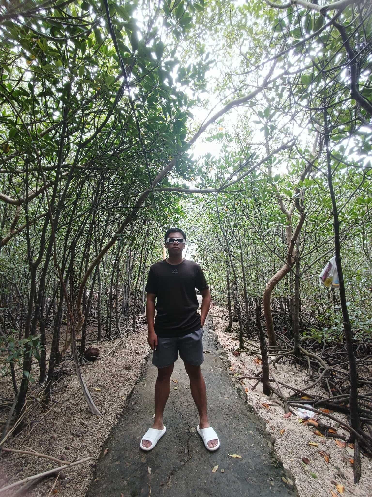

Hello, I'm Baldoza Cristina.
English Major | Student | Dreamer
Nature brings peace
English Major | Student | Dreamer
I am Baldoza , Cristina A. Bachelor of Secondary Education Major in English and I believe in the saying "Everything happens for a reason, let the God's will be done."

Our demo in ED203 was done under pressure. It was a last-minute merging of topics that were not even related, simply because it was already close to finals week. I honestly thought we would get a low grade because everything felt rushed and uncertain. We were tired, stressed, and unsure if our ideas would even make sense together. Despite all of that, we did our best, trusted one another, and gave everything we had during the demonstration. To our surprise, we received a score of 99 out of 100. That experience taught me an important lesson. Even when things are unplanned and seem impossible, teamwork, effort, and faith in the process can lead to success. It reminded me that pressure does not always mean failure—sometimes it brings out the best in us. The demo showed me that when we stay committed and support each other, we can overcome challenges and exceed our own expectations. This experience strengthened my confidence and reminded me to never underestimate what hard work and unity can achieve.
Video / Link
I was never really good at acting, and at first, I doubted myself. But when it came to our film for Gender and Society class, I knew I had to try—for the grade, yes, but also for the message we wanted to share. Stepping in front of the camera felt terrifying, and I could feel my heart pounding every time I had to perform. Yet, as I started acting, I realized it was more than just pretending; it was about expressing emotions and truths that mattered. The film focused on stereotypes surrounding gender, and being part of it opened my eyes in ways I never expected. I felt the weight of the topic as I acted, realizing how much these stereotypes affect people’s lives. Through this experience, I learned not only to challenge myself but also to appreciate the power of storytelling in creating awareness. By the end of the project, I felt proud, humbled, and deeply moved—knowing that stepping out of my comfort zone allowed me to grow and contribute to something meaningful.
Video / Link
It was my very first time joining a podcast, and the topic was mental health—something deeply personal and close to my heart. I never expected that simple conversation to become such a powerful moment in my life. For the first time, I allowed myself to speak openly about my fears, struggles, and hardships in front of other people. As I shared my story, I found myself crying, not out of weakness, but because I was finally letting go of emotions I had kept bottled up for so long. What made the experience even more meaningful was how genuine it felt. There was no script, no pressure to sound perfect—just raw honesty and real emotions. We were simply expressing ourselves, listening to one another, and creating a safe space where vulnerability was welcomed. In that moment, I realized how healing it can be to be heard and understood. After the podcast, I felt an overwhelming sense of relief, as if a heavy weight had been lifted from my heart. That experience brought me closer to the people I shared it with. We were no longer just classmates or participants in a project—we became people connected by understanding and empathy. The podcast taught me that opening up does not make me weak; instead, it makes me human. It reminded me that healing sometimes begins by speaking, listening, and allowing ourselves to be seen.
Video / Link
This was my second time participating in a school fashion event, and it was for our beloved Buwan ng Wika celebration. When they announced my name as the first-place winner, tears welled up in my eyes – not just from joy, but from the deep sense of connection I felt to our culture and the countless hours I’d spent preparing every detail of my outfit with love and respect. This experience taught me two precious lessons that I will carry with me always. First, hard work paired with passion truly pays off – every stitch I carefully sewed and every element I thoughtfully incorporated reflected my commitment to honoring our roots. Second, celebrating our culture is a powerful way to build unity; through fashion, we shared stories of where we come from and reminded each other that our diversity is our strength.

Baldoza, Cristina A. Being a Dean’s List awardee was something I once thought I could never achieve—yet here I am. For a long time, it felt like a dream meant for other people, not for someone like me. I was never the typical achiever. In fact, I only became an honor student once, back in elementary school. That is why this recognition means so much more to me. There were countless moments when I doubted myself, questioned my abilities, and wondered if all the sacrifices were truly worth it. All the sleepless nights, the tears shed over schoolwork, and the silent struggles finally paid off. Every breakdown was followed by persistence, every late night by renewed determination. This achievement is not just a recognition of academic excellence—it is proof that growth is possible, even for those who once believed they were not meant to succeed. It reminds me that perseverance and self-belief can turn even the most impossible dreams into reality, and that sometimes, the hardest journeys lead to the most meaningful victories.

It was my very first time performing on stage during my first year in college, and the experience will always hold a special place in my heart. Our performance was a whole-section presentation for our Philippine Literature subject, and to our surprise and joy, we received a perfect score of 100 percent. For someone like me who struggled with stage fright, it felt both terrifying and exciting at the same time. Seeing everyone come together with the same goal made the experience even more meaningful and reassuring. What made the performance truly unforgettable was the unity and cooperation of the entire section. Everyone was hands-on, supportive, and willing to give their best. We helped one another during practices, encouraged each other whenever nerves took over, and worked as one until the very end. That day was more than just a requirement for a subject—it became a moment of shared joy, growth, and connection that I will cherish forever.

This is the man behind every successful project I’ve ever done—the reason why my college journey feels a little lighter and more possible. He has been my constant support, guiding me through challenges, lifting me up when I felt like giving up, and reminding me that I am never alone in this journey. Knowing he believes in me gives me strength to keep going, even on the hardest days. I am deeply grateful to him for always putting my needs above his own. He sets aside his own wants, sacrifices his time and comfort, just to make sure I have what I need to succeed. His care, patience, and unwavering support have touched me more than words can express. I will always cherish and be thankful for everything he has done for me—he is not just a support, but a true blessing in my life.

I was only three years old when I started preschool. At that young age, I already learned how to go to school alone. Sometimes, I couldn’t help but envy my classmates because they were dropped off by their parents, walking hand in hand, smiling as they entered the gate. Meanwhile, I would walk by myself, pretending I didn’t care. Maybe my parents saw me as a mature child, or maybe they simply needed to trust that I could handle things on my own. Growing up in a poor family taught me early what it meant to work hard for everything I wanted. I still remember when I was in Grade 3, during the time my father was in the hospital. I would sell guavas to my teachers just so I could have a little money for school. My father has a heart condition and asthma, yet he still worked as a construction worker. Despite his efforts, we barely had enough to eat. My mother worked as a helper during weekends, doing everything she could to help us survive. When I reached Grade 4, my mother started cooking snacks—dinuldog, pancit, spaghetti, champorado, kamote cue, banana cue, and more—for me to sell at school. It was our way of trying to afford our daily needs. But that year also gave me one of the most heartbreaking memories of my childhood. One day, I didn’t have class, and I was alone with my mom at home. Suddenly, she asked me to go to my aunt’s house to borrow a phone so she could call my father. We were so poor that we couldn’t even afford a small keypad phone. My father was working in Cebu City at that time. As a young child, I didn’t understand the urgency—I thought she simply needed to ask him for money. So, I went to my aunt’s house, asked to borrow the phone, and when she said it had no load, I stayed there for about thirty minutes, just listening to my aunt and her neighbor talking. Then I heard someone arrive, out of breath. It was our neighbor. She rushed in and said my mother had been taken to the hospital because she was bleeding heavily. At that moment, everything around me went silent. My knees felt weak. My heart dropped. I ran home as fast as I could, but when I arrived, all I saw was a bed sheet soaked in blood—the smell of it still stays with me until now. I stood there, frozen, not knowing who to call or what to do. I blamed myself. I felt like it was my fault. With trembling hands and a scared little heart, I carried that heavy blanket outside and washed it. It felt heavier than anything I had ever carried, but still not as heavy as the guilt that crushed me inside—guilt that still visits me like a shadow from the past. I only felt relieved when we heard from the hospital that my mother was finally stable. That moment became the most heartbreaking memory of my elementary years. Growing up poor meant I didn’t have pictures of myself as a child. My parents couldn’t afford photographs, but what I lack in photos, I make up for in memories—both painful and beautiful. So please bear with me as I share my life, my story of sorrow, joy, and survival. My journey may have been filled with hardships, but it also shaped the strength I carry today.

Highschool I don't struggle much in blending and adjusting in highschool since I'm an outgoing person. I get easily get close to the people I meet (but now, I'm a nonchalant type). Ofcourse, high school life wasn't easy, and time thing for sure is having financial problems. I go to school with no allowance sometimes, and bring dried fish just to have something to pair with corn rice. I just to feel embarrassed around my classmates during lunch time, because of my lunch. When I was in 8th grade I would sell Indian mango, to school just to have allowance for school. And whenever we have a group activity I offered to make my cm's output so that I could get a free ride , free lunch, and they would give extra money. I used to work at the barbeque stall in our town back then during weekend and the money that I earn from work is enough for a one week allowance, I am a working student. Though studying while working is hard I managed to graduate and have a good grade.

After graduating from senior high school, I was forced to stop my studies and work instead. At first, I was very reluctant. But when I looked at our situation back then, I knew I had no choice. During my senior high school years, my father was hospitalized. He has a heart condition and asthma. The doctor advised him to stop doing heavy work, or better yet, stop working completely, so his health would not worsen. We are a family of eight. My mother works as a school utility worker, but her income was not enough to support the whole family and my father’s maintenance medicines. At that time, my two older siblings were working students. My older sister was already in her third year of college, and my other sibling was in first year college. Neither of them was willing to stop studying, and so the pressure was placed on me. With great reluctance, I agreed to sacrifice my education. A few days after graduation, I traveled to Cebu and stayed there for three weeks for training. After that, I flew to Manila. What makes this experience unforgettable is that I had to use a fake ID just to pass the front desk because I was only 17 years old and not allowed to travel alone. I almost got caught, but somehow, I managed to get through. It was August 5, 2022, when I arrived in Manila. I was turning 18 on August 8, 2022. I was deeply saddened that I did not get to experience my debut. Still, I held on to the saying, “Everything happens for a reason.” Working there was filled with both longing and happiness. I missed my family deeply, but at the same time, I grew as a person—mentally and spiritually. I became more independent, stronger, and more prepared to fight my own battles in life. It was also there that I met the love of my life—someone I never thought nor imagined would become my partner. He has been there for me every step of the way, supporting and guiding me through my hardest moments. He has become a part of me, someone I will cherish for the rest of my life.

After two years of working, I was finally able to return to school. This time, however, adjusting to college life was a struggle for me. It was very different from high school and senior high. At first, I felt left out because I was older than most of my classmates. They were younger, more active, and very competitive, which made me feel even more out of place. Still, with their help and encouragement, I slowly learned how to adjust and eventually found my place among them. I am truly proud to have met these people because I have learned so much from them, not only academically but also personally. College life is tiring and far from easy, but it has also been meaningful. Thankfully, I have someone who makes everything lighter and easier for me, reminding me that even during the hardest days, I am not alone.
Email: cristinabaldoza689@gmail.com
Location: Philippines